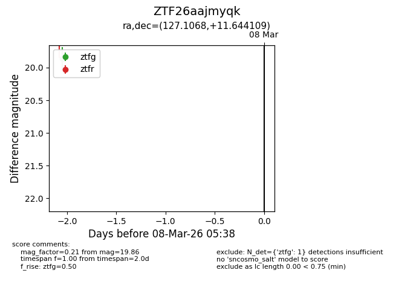
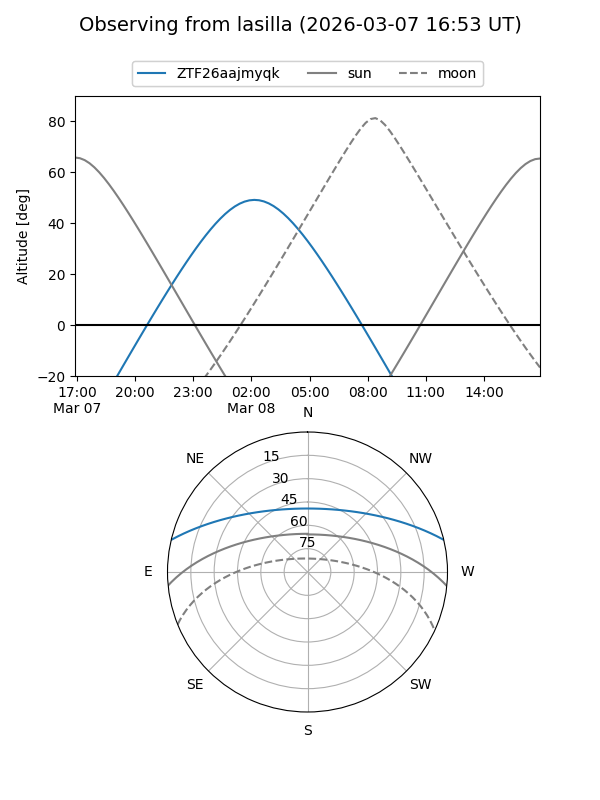
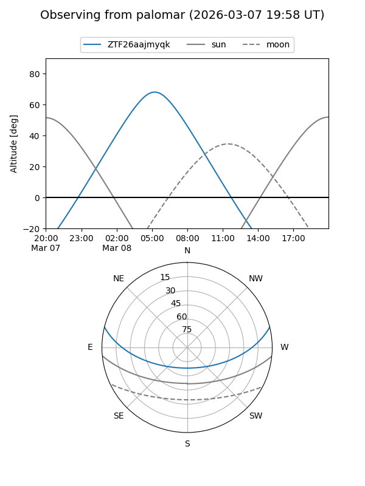

ZTF26aajmyqk
Target ZTF26aajmyqk at 2026-03-08 05:41
Aliases and brokers:
FINK: link
Lasair: link
ALeRCE: link
alt names
ZTF26aajmyqk (ztf,fink_ztf)
Coordinates:
equatorial (ra, dec) = 127.1068,+11.64411
equatorial (HMS+DMS) = 08:28:25.64,+11:38:38.79
galactic (l, b) = (213.1745,+26.74418)
Flags:
Photometry:
last ztfg=19.86
1 ztfg detections
Lightcurve

Visibility


Additional plots